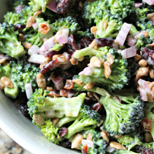

Salad

Salad is a healthy meal to have for those who wish to lose weight and still get the proper nutirents needed for the whole day.
Not a lot are a fan of the taste of salad, but salads are still very importnat for one's health.
Ingredients
- ½ pound bacon
- 2 heads fresh broccoli
- 1 small red onion
- ¾ cup raisins
- ¾ cup sliced almonds
- 1 cup mayonnaise
- ½ cup white sugar
- 2 tablespoons white wine vinegar
Steps
- Gather all ingredients.
- Place bacon in a deep skillet and cook over medium-high heat until evenly brown, 7 to 10 minutes. Cool and crumble.
- Cut the broccoli into bite-sized pieces and cut the onion into thin bite-sized slices. Combine with the bacon, raisins, and almonds and mix well.
- To prepare the dressing, mix the mayonnaise, sugar, and vinegar together until smooth. Stir into the salad.
- Let chill before serving, if desired.